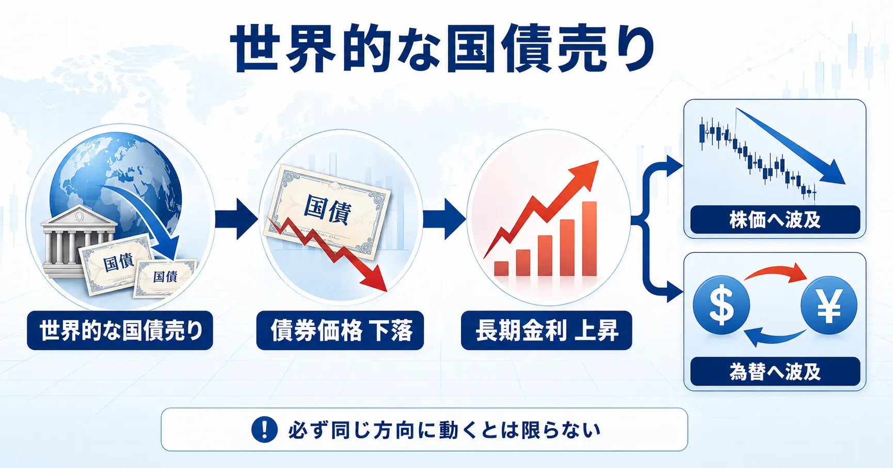

話題・トレンド
債券市場とは？なぜ「世界的な国債売り」で株価まで下がるの？初心者向けに解説
金融ニュースの「債券安・金利上昇」は、国債の価格が下がり、利回りが上がっているという意味です。債券市場で決まる長期金利は企業や家計の負担、株式の評価、為替にもつながるため、株式投資家にも無関係ではありません。
Overview
債券市場から株価・為替へ影響が広がる流れ

Definition
債券市場とは？
債券は、国や企業などが投資家から資金を借りるために発行する有価証券です。国が発行するものを国債、企業が発行するものを社債と呼びます。
発行市場
新しい債券で資金を調達する市場
国や企業が新たな債券を発行し、投資家が購入します。発行体に資金が渡る場です。
流通市場
発行済みの債券を売買する市場
保有者と別の投資家が債券を売買します。ニュースでいう債券価格や利回りは、この取引を通じて動きます。
株式は企業への出資を表し、債券は発行体への貸付に近い性質を持ちます。ただし、債券にも価格変動や信用リスクがあります。国債自体の詳しい仕組みは「国債とは？国債が売られるとなぜ金利が上がるの？」で確認できます。
Why It Matters
なぜ債券市場が投資家から注目されるの？
国債利回りは市場参加者のインフレ予想、景気見通し、金融政策、債券の需給を映します。特に長期国債の利回りは、住宅ローンや企業の借入・社債発行など幅広い金利の基準として意識されます。
このため、株式だけを取引する投資家も、米10年債利回りや日本の10年国債利回りを確認します。金利が生活や投資へ与える基本的な影響は「金利上昇とは？」でも解説しています。
Price and Yield
債券価格と利回りはなぜ逆に動く？
債券が売られる場合
売り増加 → 価格下落 → 利回り上昇
既発債を安く買えるほど、購入価格に対して受け取れる利息や償還金の割合が高くなります。
債券が買われる場合
買い増加 → 価格上昇 → 利回り低下
既発債の購入価格が高くなるほど、購入価格に対する収益の割合は低くなります。
ここでは市場全体を見るための復習にとどめます。数値例を含む詳しい説明は国債価格と利回りの解説記事をご覧ください。
Global Selloff
「世界的な国債売り」とは？
米国、日本、欧州など複数地域の国債が同じ時期に売られ、利回りが上昇する状況です。「債券安・金利上昇」と表現されることもあります。
Causes
なぜ世界の国債が同時に売られることがあるの？
インフレ・資源価格
世界的な物価上昇や原油高で、金利が長く高い状態になるとの予想が強まる場合があります。
中央銀行の政策見通し
利下げ期待の後退や利上げ観測は、新発債がより高い金利になるとの見方につながり、既発債の価格を押し下げる場合があります。
財政・国債発行量・需給
発行量が増える一方で買い手が十分でないと考えられれば、より高い利回りが求められることがあります。
景気と金利予想
景気の強さ、賃金、物価指標、市場参加者の予想変更によって国債の適正な利回りが見直されます。
実際の国債売りは、これら複数の材料が同時に影響することが多く、一つの原因だけでは説明できない場合があります。物価指標はCPIやPCEデフレーター、中央銀行の判断はFOMCやタカ派・ハト派の記事につながります。
Oil and Inflation
原油高やインフレ懸念で国債が売られることがあるのはなぜ？
原油は輸送、製造、電力など幅広いコストに関係します。原油高が物価へ広がると予想されれば、債券保有で得られる将来の利息の実質的な価値が目減りするとの警戒や、中央銀行が金融緩和に動きにくいとの見方が強まります。
ただし、原油高が景気を大幅に冷やすとの見方が強まれば安全資産需要が生じることもあり、原油高＝必ず国債売りではありません。詳しくは「原油価格が上がると株価や物価はどうなる？」をご覧ください。
Long-term Rates
国債売りで長期金利が上がるのはなぜ？
10年国債は発行量と取引量が大きく、景気・物価・金融政策の中長期的な見方を反映しやすいため、その利回りが代表的な長期金利の指標として報じられます。国債が売られて価格が下がると利回りが上がるため、「国債売りで長期金利上昇」と表現されます。
政策金利
中央銀行が決定する短期金利の基準
中央銀行の会合で決まり、短期の市場金利に強く影響します。
長期金利
市場で形成される中長期の金利
将来の政策金利予想、インフレ、景気、需給などを反映します。
政策金利と長期金利は同じものではありません。中央銀行の発言は長期金利にも影響しますが、市場の予想や国債需給により異なる動きをする場合があります。
Stocks
なぜ長期金利が上がると株価が下がることがあるの？
1．企業の資金調達コスト
借入金利や社債利回りが上がると、利払い負担が増え、利益や新規投資の余力を圧迫する場合があります。
2．将来利益の現在価値
株価評価では将来利益を現在の価値へ割り引きます。基準となる金利が上がると、同じ将来利益でも現在価値が低く計算されやすくなります。
3．株式と債券の相対的な魅力
安全性が比較的高いとされる国債の利回りが上がると、価格変動リスクのある株式に求める収益率も高まり、株価の重荷になる場合があります。
4．実体経済への影響
住宅ローンや企業融資の金利上昇は、住宅購入、消費、設備投資を抑え、景気や企業業績へ波及する可能性があります。
成長株・ハイテク株は、利益の多くを将来の成長に期待して評価されることが多いため、割引率上昇の影響を意識されやすい傾向があります。半導体株などが金利ニュースで大きく動く場合があるのも、この評価面と景気・設備投資の両方が関係します。
Sectors
銀行株などは金利上昇で違う動きをすることもある？
株式市場全体が同じ方向へ動くとは限りません。銀行では貸出金利と預金金利の差が収益期待に影響するため、適度な金利上昇がプラス材料と受け止められる場合があります。一方、金利が急上昇すれば保有債券の評価や信用コスト、景気悪化への懸念が重荷になることもあります。
不動産、公益、成長株、輸出企業なども金利や為替への感応度が異なります。業種ごとの違いは「セクター投資とは？」で確認できます。
Foreign Exchange
債券市場と為替はどうつながっている？
投資家は各国の金利差だけでなく、今後その差が拡大するか縮小するかを見ます。一般に高い利回りを得られる通貨へ資金が向かうことがありますが、景気不安、安全資産需要、財政への信認、ポジション調整なども為替を動かします。
そのため、米金利上昇＝必ずドル高・円安とは限りません。円相場の基本は「円安とは？」でも解説しています。
Stocks and Bonds
「株も債券も売られる」ことはある？
あります。「株安なら安全資産とされる国債が必ず買われる」とは限りません。インフレと金利上昇が市場の中心テーマになると、株式には企業負担と評価面の重荷がかかり、既存債券にはより高い金利の新発債と比べた魅力低下が生じます。
株式
金利上昇による企業負担、景気への影響、株式評価の低下が意識される。
債券
市場金利上昇によって、低い利率で発行済みの債券価格が下落する。
景気悪化や信用不安が中心なら国債が買われる場合もありますが、「リスクオフ＝必ず債券高」ではありません。資産を分ける意味と限界は「分散投資とは？」でも確認できます。
Global Connection
世界の債券市場はどうつながっている？
- 年金基金、保険会社、運用会社など世界の機関投資家が複数国の債券を比較する
- 国際的な資金移動が各国の債券需給と為替へ影響する
- 各国の金利差と為替ヘッジ後の利回りが投資判断に使われる
- 原油高など世界共通のインフレ材料が複数市場へ広がる
- FRBやECBなど主要中央銀行の政策が世界の金利予想を変える
ただし、経済成長率、物価、金融政策、財政、国債発行、投資家層は国ごとに異なります。世界の債券市場はつながっていますが、完全に同じ幅・同じ理由で動くわけではありません。
News Checklist
初心者が債券市場ニュースを見るポイント
- どの国の国債か：米国、日本、ドイツ、英国など対象を確認する
- 何年物か：2年、10年、30年では反映しやすい材料が異なる
- 価格と利回りのどちらか：「価格下落」と「利回り上昇」を混同しない
- インフレ：CPI、PCE、賃金などに変化があったかを見る
- 中央銀行：利上げ・利下げの予想が変化したかを見る
- 商品価格：原油や天然ガスなどが動いているかを見る
- 他市場：株価、為替、金などがどう反応したかを見る
見出しだけで原因を一つに決めず、「世界共通の材料」と「その国固有の事情」を分けると理解しやすくなります。
Latest Update
直近で世界の債券市場が注目されている理由
この節は市場環境の変化に合わせて更新します。以下は2026年9月2日時点の整理です。
2026年9月初めは、中東情勢を背景とする原油高とインフレ懸念、中央銀行が金利を高く保つとの見方、政府債務・国債供給への警戒が重なり、米国・日本・欧州などで国債売りと利回り上昇が注目されました。報道では米10年債利回りが4.8％近辺、日本の10年国債利回りが3％近辺へ上昇するなど、複数地域の長期金利が節目を試す動きが伝えられました。
背景は一つではありません。米国ではインフレとFRBの政策見通し、日本では物価・日銀の政策と国債買い入れ、欧州ではエネルギー価格とECBの政策予想、各国では財政と国債需給がそれぞれ意識されています。このため「全世界が同じ理由だけで売っている」と捉えないことが重要です。
確認した主な情報源
- Reuters：2026年9月2日の世界的な債券売り
- FRB：Selected Interest Rates（米国債利回り）
- 日本銀行：金融政策決定会合議事要旨（国債買い入れ・長期金利）
- ECB：2026年7月の金融政策決定
Related Articles
関連する基礎知識
物価、中央銀行、債券市場、株価、為替の順に学ぶと、ニュースのつながりを理解しやすくなります。
FAQ
債券市場に関するよくある質問
債券市場とは何ですか？
国債や社債などの債券が発行され、投資家の間で売買される市場です。新しい債券を発行する発行市場と、発行後の債券を取引する流通市場があります。国債と債券の違いは何ですか？
債券は資金を借りるために発行する有価証券の総称です。そのうち、国が発行する債券を国債、企業が発行するものを社債と呼びます。なぜ債券価格と利回りは逆に動くのですか？
受け取れる利息などが一定の既発債は、取引価格が下がるほど購入価格に対する収益の割合が高くなり、利回りが上がるためです。世界的な国債売りとは何ですか？
米国、日本、欧州など複数地域の国債が同じ時期に売られ、利回りが上昇する状況です。各国固有の事情と世界共通の材料が重なって起きる場合があります。なぜ複数の国の国債が同時に売られるのですか？
世界的なインフレ懸念、資源価格、中央銀行の政策予想、国債発行量、国際的な資金移動などが複数市場へ同時に影響することがあるためです。国債が売られるとなぜ長期金利が上がるのですか？
国債が売られて価格が下がると利回りが上がります。10年国債利回りなどが代表的な長期金利の指標として扱われるため、国債売りが長期金利上昇として報じられます。長期金利が上がるとなぜ株価が下がることがあるのですか？
企業の借入負担、将来利益の現在価値、債券との相対的な魅力、住宅や設備投資への影響が意識されるためです。ただし、景気や業績など他の材料もあり、必ず株安になるわけではありません。株と債券が同時に下がることはありますか？
あります。インフレや金利上昇が中心テーマの場合、株式には企業負担や評価面の重荷となり、既存債券には価格下落要因となるため、同時に売られることがあります。
Summary
まとめ｜債券市場は株価・為替を読み解く重要な市場
- 債券市場では国債や社債などが発行・売買されています。
- 債券価格と利回りは基本的に逆方向へ動きます。
- 世界共通のインフレ・金融政策と各国固有の事情を背景に、複数国の国債が同時に売られる場合があります。
- 国債売りによる利回り上昇は、代表的な長期金利の上昇につながります。
- 長期金利は企業の資金調達、将来利益の評価、住宅・設備投資へ影響します。
- そのため債券市場の動きが株式市場へ波及することがあります。
- インフレ局面などでは株式と債券が同時に売られる場合もあります。
- 債券市場は為替、原油、物価、中央銀行の政策と相互に関係します。
- 「国債売り＝必ず株安」など一方向に断定しないことが重要です。
Next Step
国債価格と利回りの基本を詳しく確認する
債券市場全体のつながりを理解したら、国債価格と利回りが逆に動く数値例を確認すると、ニュースをさらに読みやすくなります。
ご利用にあたっての注意事項
本記事は一般的な情報提供と金融教育を目的としており、特定の国債・社債・株式・ETF・金融商品の推奨や投資の勧誘を目的としたものではありません。債券や株式などの金融商品には価格変動、金利変動、信用、為替、流動性などのリスクがあり、損失が生じる場合があります。取引を行う際は最新の公式情報や契約締結前交付書面などを確認し、ご自身の判断と責任で行ってください。